2025
Conference
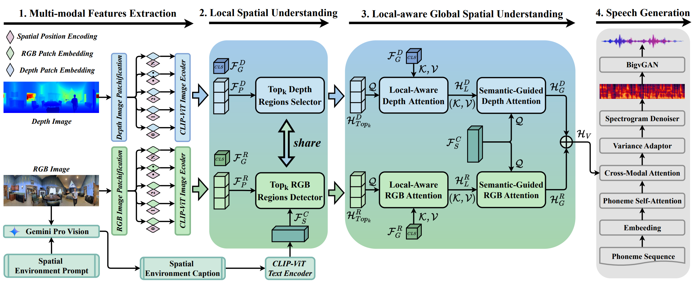
Multi-modal and Multi-scale Spatial Environment Understanding for Immersive Visual Text-to-Speech
AAAI 2025
2024
Conference
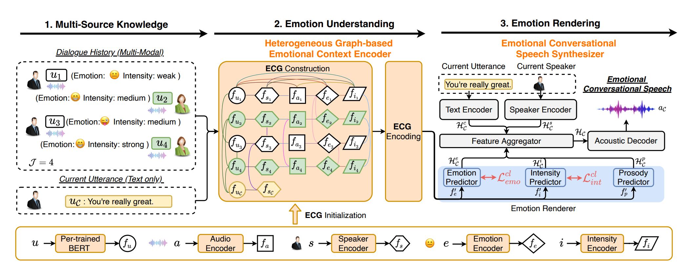
Emotion Rendering for Conversational Speech Synthesis with Heterogeneous Graph-Based Context Modeling
AAAI 2024
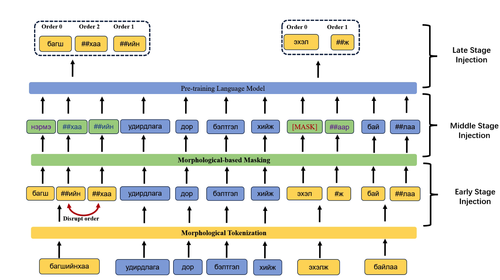
Pre-training Language Model for Mongolian with Agglutinative Linguistic Knowledge Injection
IJCNN 2024
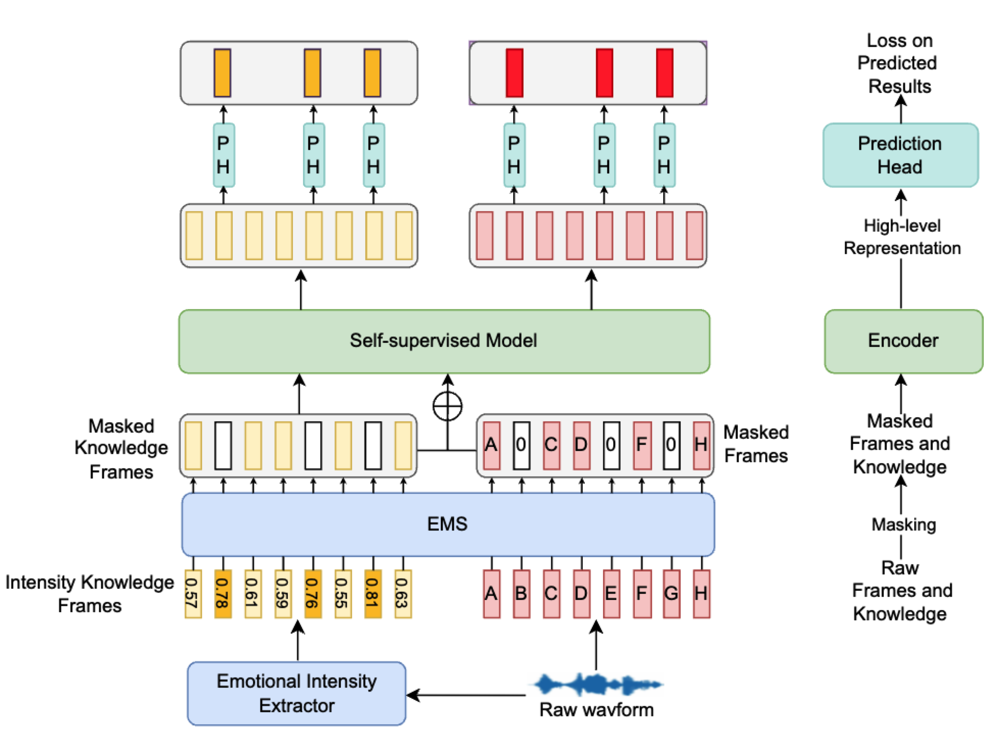
Emotion-Aware Speech Self-Supervised Representation Learning with Intensity Knowledge
InterSpeech 2024
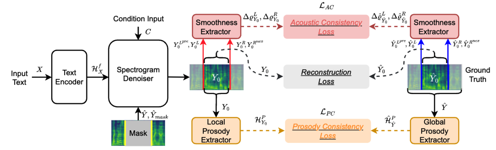
FluentEditor: Text-based Speech Editing by Considering Acoustic and Prosody Consistency
InterSpeech 2024
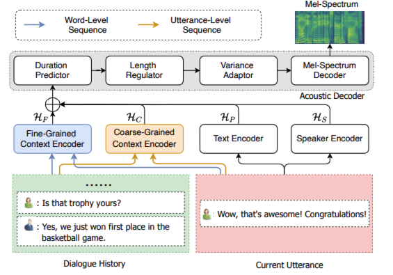
FCTalker: Fine and Coarse Grained Context Modeling for Expressive Conversational Speech Synthesis
ISCSLP 2024
Journal
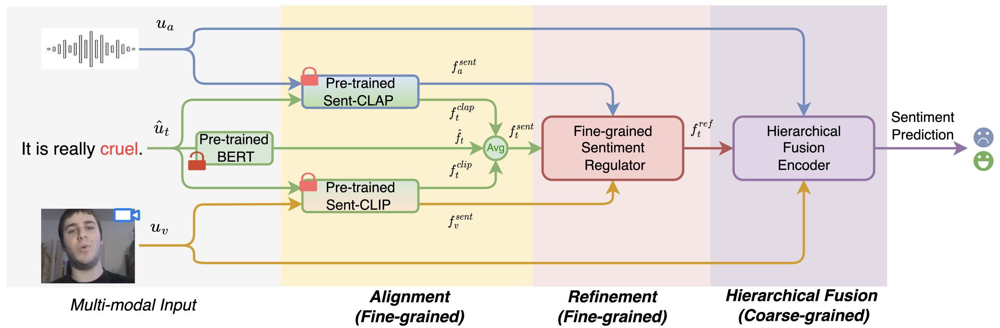
Connecting Cross-Modal Representations for Compact and Robust Multimodal Sentiment Analysis With Sentiment Word Substitution Error
IEEE Transactions on Affective Computing 2024

Controllable Accented Text-to-Speech Synthesis with Fine and Coarse-Grained Intensity Rendering
IEEE/ACM-TASLP 2024
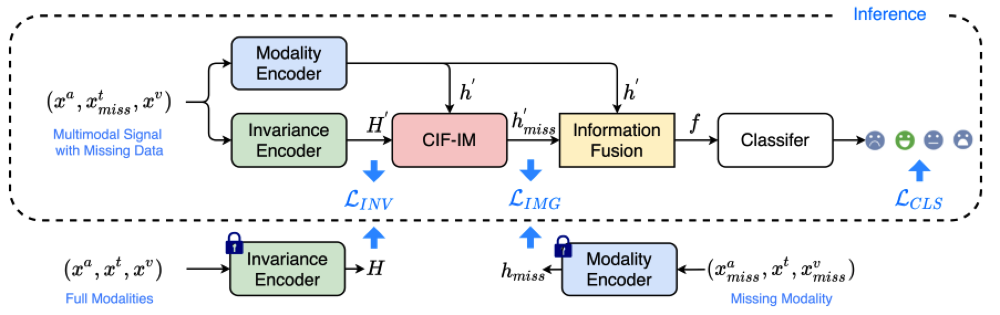
Contrastive Learning based Modality-Invariant Feature Acquisition for Robust Multimodal Emotion Recognition with Missing Modalities
IEEE Transactions on Affective Computing 2024
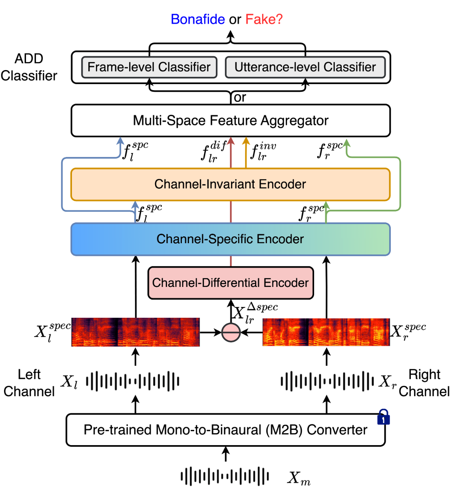
Multi-Space Channel Representation Learning for Mono-to-Binaural Conversion based Audio Deepfake Detection
Information Fusion 2024
2023
Conference
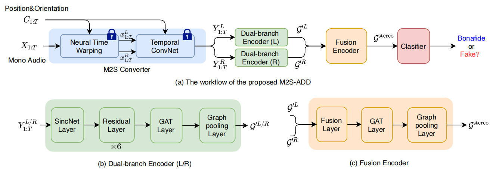
InterSpeech 2023
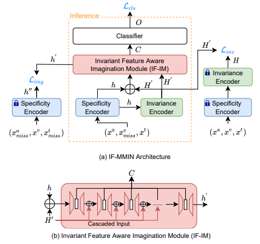
Exploiting Modality-invariant Feature For Robust Multimodal Eemotion Recognition With Missing Modalities
ICASSP 2023
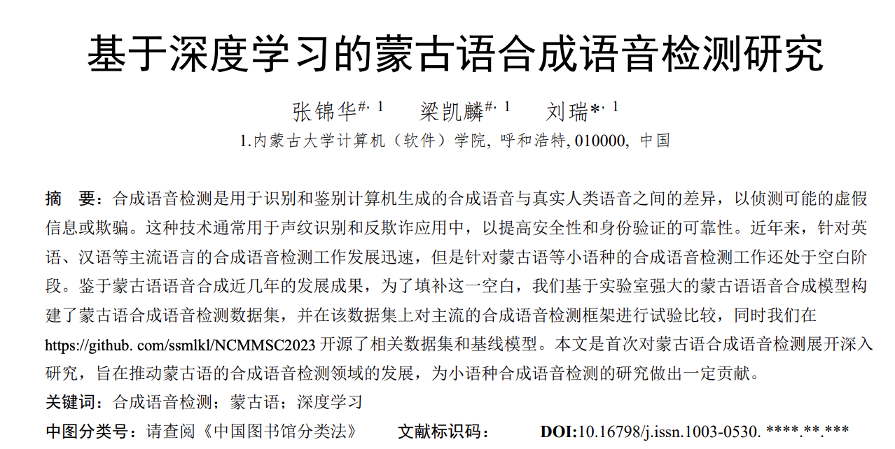
Research on Mongolian Synthetic Speech Detection based on Deep Learning (in Chinese)
NCMMSC 2023
Journal
2022
Conference
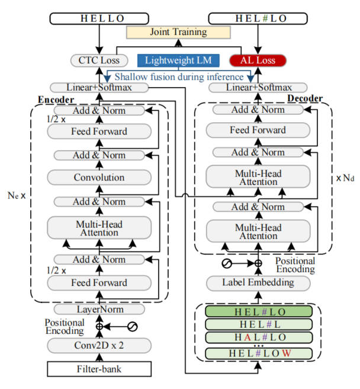
Alignment Learning based Single-Step Decoding for Accurate and Fast Non-Autoregressive Speech Recognition
ICASSP 2022
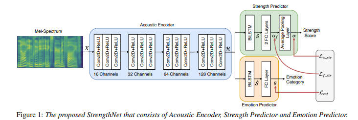
Accurate Emotion Strength Assessment for Seen and Unseen Speech Based on Data-Driven Deep Learning
INTERSPEECH 2022

INTERSPEECH 2022
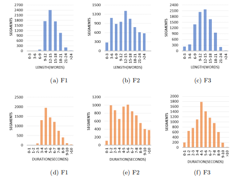
MnTTS2: An Open-Source Multi-Speaker Mongolian Text-to-Speech Synthesis Dataset
NCMMSC 2022
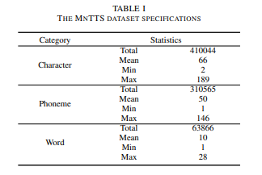
MnTTS: An Open-Source Mongolian Text-to-Speech Synthesis Dataset and Accompanied Baseline
IALP 2022
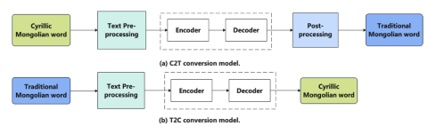
A Deep Investigation of RNN and Self-attention for the Cyrillic-Traditional Mongolian Bidirectional Conversion
ICONIP 2022
Journal
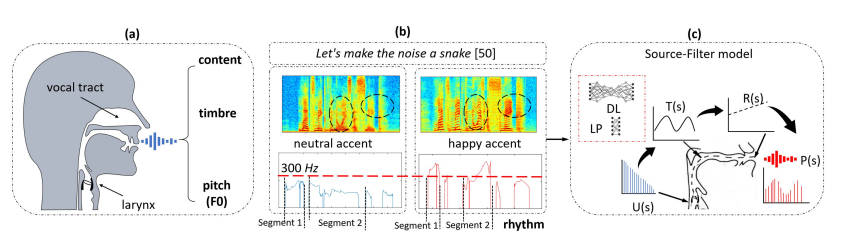
Decoupling Speaker-Independent Emotions for Voice Conversion Via Source-Filter Networks
IEEE/ACM-TASLP 2022
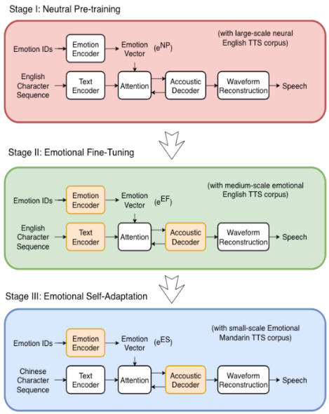
IEEE Internet of Things Journal (IEEE-IoTJ) 2022
2021
Conference
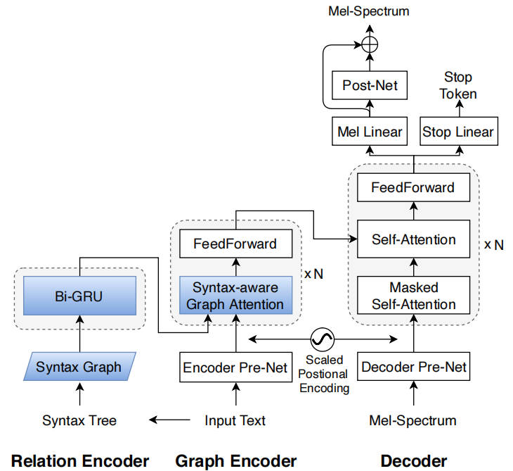
GraphSpeech: Syntax-Aware Graph Attention Network for Neural Speech Synthesis
ICASSP 2021
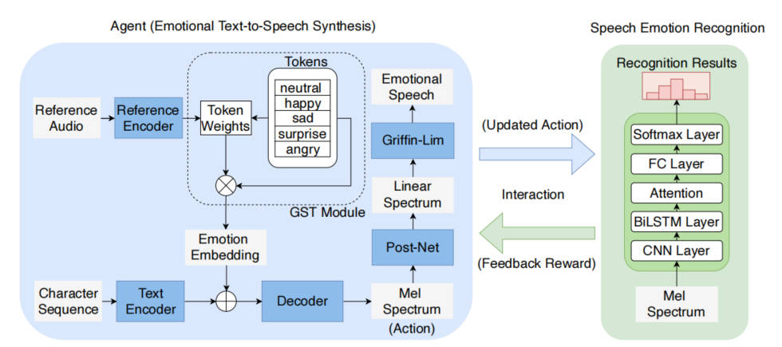
Reinforcement Learning for Emotional Text-to-Speech Synthesis with Improved Emotion Discriminability
InterSpeech 2021
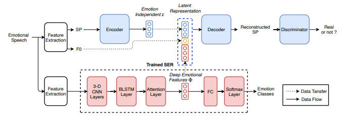
Seen and Unseen Emotional Style Transfer for Voice Conversion with a New Emotion Speech Dataset
ICASSP 2021
Journal
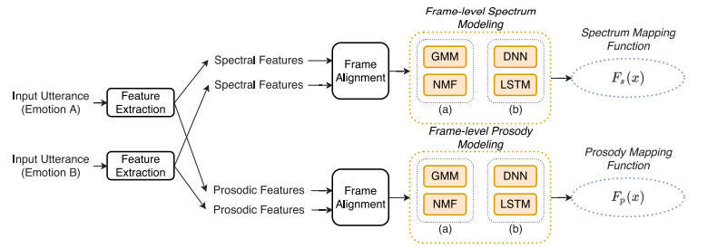
Speech Communication 2022

IEEE/ACM-TASLP 2021
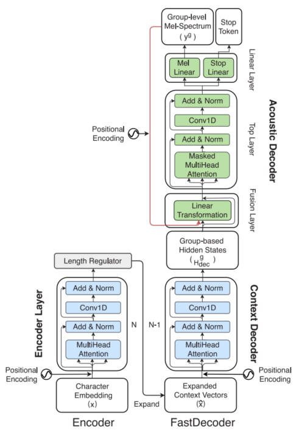
FastTalker: A neural text-to-speech architecture with shallow and group autoregression
Neural Networks 2021
2020
Conference

Journal
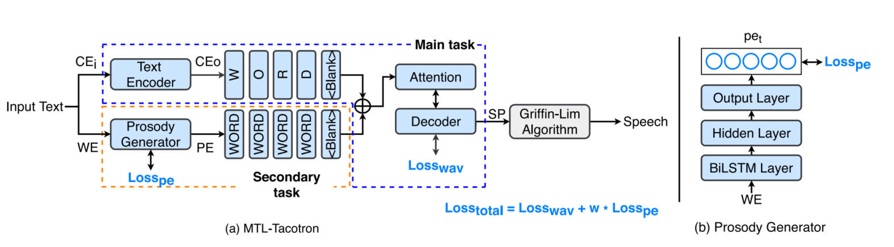
Modeling Prosodic Phrasing With Multi-Task Learning in Tacotron-Based TTS
IEEE Signal Processing Letters 2020